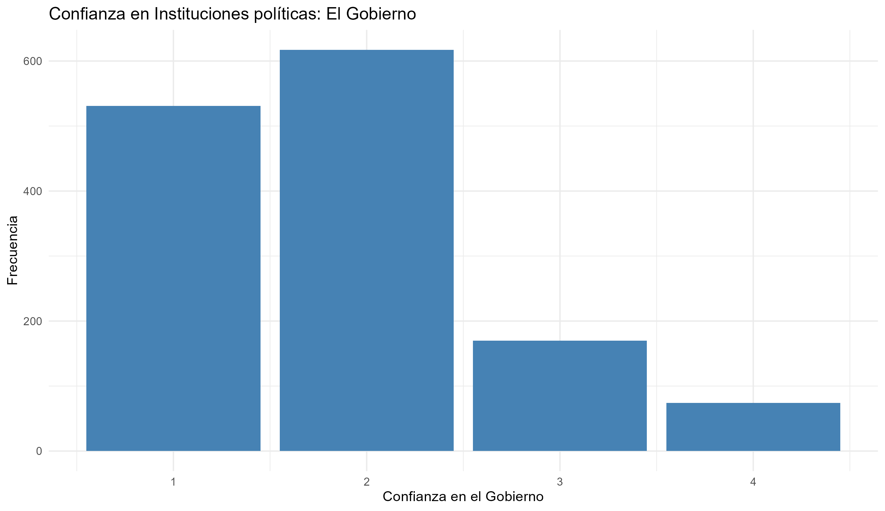
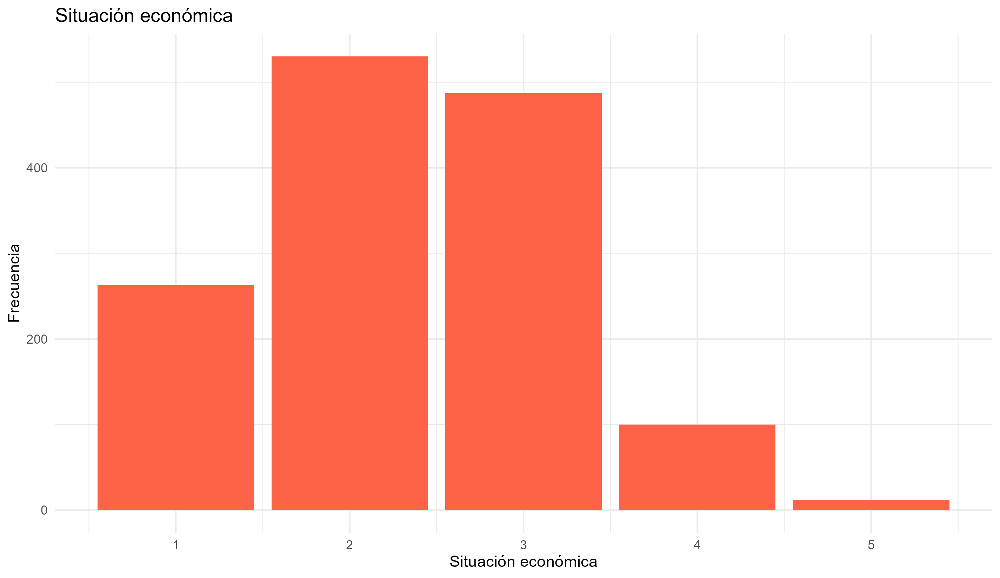
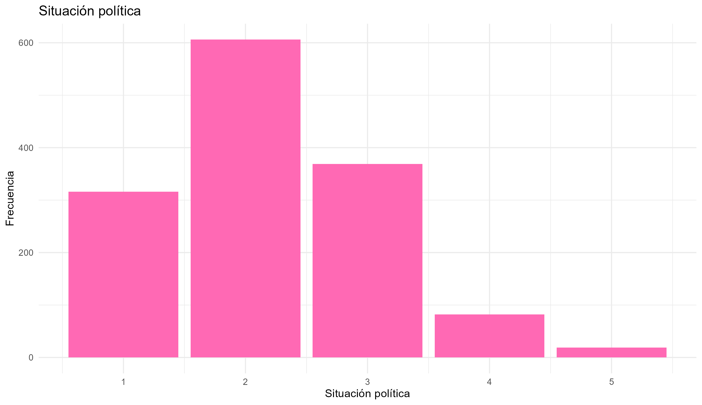
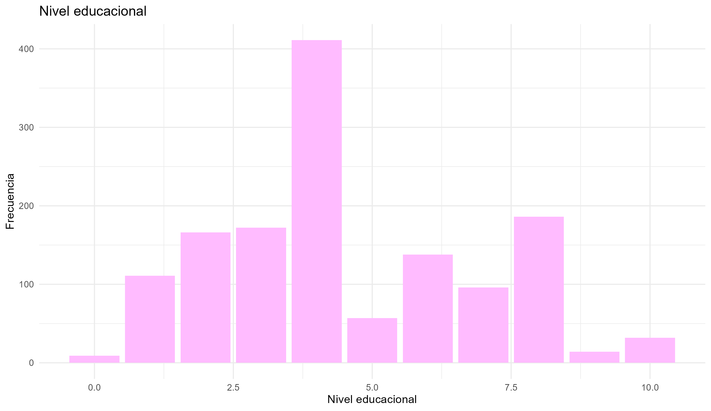
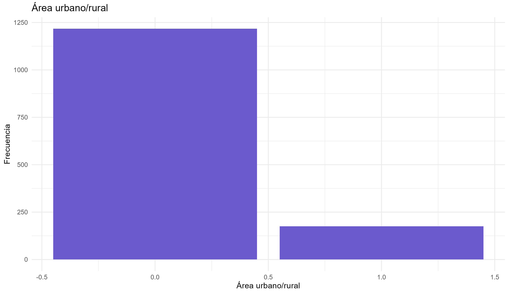
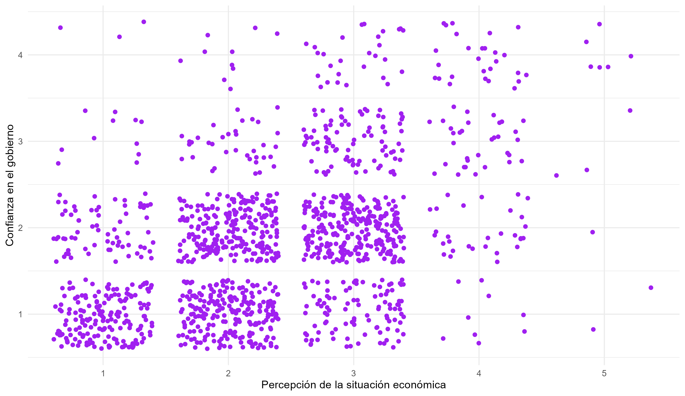
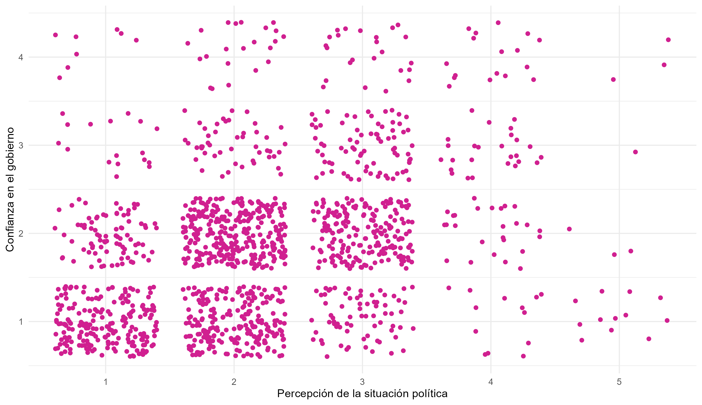
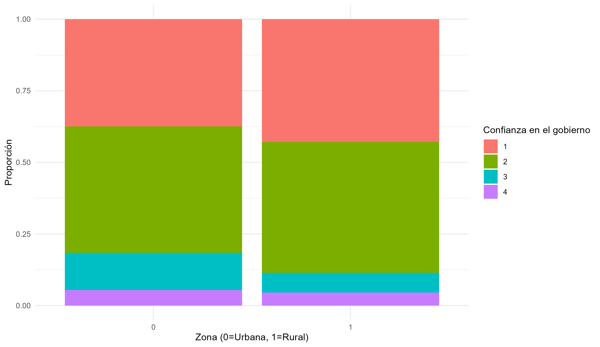

| val | label | frq | raw.prc | valid.prc | cum.prc |
| 1 | Nada de confianza | 74 | 5.32 | 5.32 | 5.32 |
| 2 | Poca confianza | 170 | 12.21 | 12.21 | 17.53 |
| 3 | Bastante confianza | 617 | 44.32 | 44.32 | 61.85 |
| 4 | Mucha confianza | 531 | 38.15 | 38.15 | 100 |
| NA | NA | 0 | 0 | NA | NA |
Rol de la percepción política, ecónomica y factores sociodemográficos en la confianza en el Gobierno
Estadística Correlacional 2024, Carrera de Sociología - Universidad de Chile
Resumen
La confianza en instituciones políticas es fundamental para una buena democracia, cohesión social, y desarrollo económico, político y social de los Estados. Es por ello que en el siguiente informe se intentará responder la pregunta: ¿Cómo influyen la percepción de la situación económica, la percepción de la situación política y las características sociodemográficas en la confianza en el Gobierno? De acuerdo a la revisión de estudios anteriores, se tiene la hipótesis que cada una de estas variables poseerá correlación con la confianza en el Gobierno. Para comprobar las cuatro hipótesis, se utilizará la base de datos de la última Encuesta CEP de este año, la cual entrega datos de 1.478 casos. Se realizaron análisis bivariados, utilizando específicamente la correlaciones entre las variables de interés con los métodos de Spearman, Punto Biserial y Pearson dependiendo de la naturaleza de las variables, y los casos perdidos fueron tratados con listwise. Los resultados del análisis indican que existe asociación estadísticamente significativa entre confianza en el gobierno y todas las demás variables, siendo el resultado más concluyente la correlación entre la confianza en el gobierno y la percepción de la situación económica, seguida en tamaño de efecto por la percepción de situación económica.
1 Introducción
La confianza en las instituciones políticas es fundamental para la estabilidad de las democracias y el desarrollo multidimensional de los países (CEP, 2023). En este trabajo, se pondrá el foco en la confianza en el Gobierno, una variable seleccionada considerando que Chile, como república presidencialista, tiene a este como la principal cara visible de la política nacional. Entre 1996 y 2011, el Gobierno fue mayoritariamente la institución política mejor evaluada en Latinoamérica, superando a los partidos políticos y al Congreso (Bargsted et al., 2017). Estos hallazgos son consistentes con el Estudio Nacional de Opinión Pública (2022) y con los resultados de la última encuesta CEP realiza a mediados de este año. Por estas razones, se ha elegido esta variable como la dependiente y eje de este análisis.
La confianza se define como una posición sobre el comportamiento venidero de un otro, entendiéndose que este puede beneficiar a los efectos de las acciones propias. La confianza entre agentes sociales es esencial para la cooperación y agilización de procesos, mejorando así el desempeño de instituciones, y el desarrollo económico y social (Riffo et al., 2019). Para ello, tanto la confianza interpersonal como hacia las instituciones son relevantes (estadísticamente suelen tener comportamiento similar, siendo directamente proporcionales). Como se mencionó, se ha elegido la confianza institucional para este trabajo, en específico a la institución política que es el Gobierno.
De acuerdo a Saldaña y Pineda (2019), la literatura sobre confianza en instituciones políticas puede explicarse desde dos enfoques principales. El primero atribuye la confianza a satisfacción con un contexto socioeconómico particular, apego a la institucionalidad y respeto de derechos de los ciudadanos de la institución, teniendo estas variables asociación positiva con la confianza (Morales, 2008; del Tronco 2012 como se citó en Saldaña y Pineda, 2019). El segundo se refiere a interiorización de normas vía socialización, participación en asociaciones voluntarias y confianza interpersonal.
Es por ello que es fundamental comprender las bases que sustentan la relación entre las distintas variables asociadas, ya que aquello ilustra un marco global del funcionamiento de la democracia a raíz de las necesidades, demandas y expectativas de la sociedad chilena.
De este modo, el objetivo de esta investigación es analizar cómo la percepción de la situación política y económica se relaciona con la confianza en el gobierno y sus instituciones, considerando que estas variables están profundamente influenciadas por contextos personales, económicos, sociales y culturales. Además, se busca comprender de qué manera factores como el nivel educativo y el área de residencia afectan esta relación. En este marco, la pregunta de investigación de este trabajo es: ¿Cómo influyen la percepción de la situación económica, la percepción de la situación política y las características sociodemográficas en la confianza en el Gobierno? Para abordar este objetivo, se emplearán análisis bivariados entre nuestras variables de interés. Basándonos en el Estudio Nacional de Opinión Pública, creado en base a la encuesta CEP del 2024, planteamos las siguientes 4 hipótesis:
H1: Existe asociación entre las variables percepción de la situación económica y confianza en el gobierno.
H2: Existe asociación entre las variables percepción de la situación política y confianza en el gobierno.
H3: Existe asociación entre las variables área urbano/rural y confianza en el gobierno.
H4: Existe asociación entre las variables nivel educacional y confianza en el gobierno.
2 Metodología
Para realizar el análisis sobre este fenómeno, se utilizó la Encuesta Nacional de Opinión Pública CEP N°91 del 2024. Esta es realizada por el Centro de Estudios Públicos, y su objetivo es “conocer las preocupaciones, preferencias y necesidades de la población así como reflejar las continuidades y cambios que experimenta la sociedad chilena” (Centro de Estudios Públicos [CEP], s.f). Se aplicó entre el 31 de mayo y el 14 de julio de 2024 en 1.478 personas mayores de 18 años residentes en Chile, de 118 comunas del país, a través de entrevistas cara a cara realizadas por un/a encuestador/a (CEP, 2024). El diseño de la muestra se hizo de manera probabilística, siendo proporcional a la población mayor de 18 años del país, por estratificación de región y zona urbana/rural, y la selección fue aleatoria en cada etapa, es decir, primero por manzana/entidad, luego por vivienda y finalmente por persona entrevistada.
En primer lugar, de la base de datos de la encuesta se seleccionó la variable “confianza_6_i”, que se renombró a “conf_gob”, ya que mide la confianza en el Gobierno, y es la variable que será utilizada como dependiente en esta investigación. Pertenece a la pregunta MB_14 del Módulo Básico (MB), que mide la confianza en 20 instituciones mediante una escala ordinal de Likert con 4 opciones: “Mucha confianza” (1), “Bastante confianza” (2), “Poca confianza” (3) y “Nada de confianza” (4). Para facilitar el análisis, la escala debió ser recodificada para que representara un orden de menor a mayor confianza, asignándole el valor 1 a la opción “Nada de confianza”, y así consecutivamente.
Como variables independientes fueron seleccionadas 4 variables: “percepcion_2”, “percepcion_38”, “zona_u_r” y “esc_nivel_1_c”. Las dos primeras variables, correspondientes a las preguntas MB_2 y MB_6 del Módulo Básico (MB), miden de forma ordinal, por medio de escalas Likert la percepción de la situación económica y la situación política actuales, por lo que fueron renombradas a “situacion_econ” y “situacion_politica” respectivamente.
La variable percepción económica tiene 5 opciones, que son: “Muy mala” (1), “Mala” (2), “Ni buena, ni mala” (3), “Buena” (4), y “Muy buena” (5), mientras que la de percepción política contaba con las mismas opciones, pero estas estaban ordenadas al revés, es decir, de “Muy buena” a “Muy mala”, por lo que se decidió recodificarla para que siguiera el mismo orden de la anterior.
| val | label | frq | raw.prc | valid.prc | cum.prc |
| 1 | Muy mala | 19 | 1.36 | 1.36 | 1.36 |
| 2 | Mala | 82 | 5.89 | 5.89 | 7.26 |
| 3 | Ni buena, ni mala | 369 | 26.51 | 26.51 | 33.76 |
| 4 | Buena | 606 | 43.53 | 43.53 | 77.3 |
| 5 | Muy buena | 316 | 22.7 | 22.7 | 100 |
| NA | NA | 0 | 0 | NA | NA |
| val | label | frq | raw.prc | valid.prc | cum.prc |
| 1 | Muy mala | 263 | 18.89 | 18.89 | 18.89 |
| 2 | Mala | 530 | 38.07 | 38.07 | 56.97 |
| 3 | Ni buena, ni mala | 487 | 34.99 | 34.99 | 91.95 |
| 4 | Buena | 100 | 7.18 | 7.18 | 99.14 |
| 5 | Muy buena | 12 | 0.86 | 0.86 | 100 |
| NA | NA | 0 | 0 | NA | NA |
La tercera variable no es una pregunta del cuestionario, sino que es parte de la estrategia de muestreo y el perfil de las zonas donde se aplicó la encuesta. Es una variable nominal dicotómica, que expresa si el encuestado vive en un área urbana o rural, donde se le asignó el valor 1 a urbana y 2 a rural, pero para su mejor manejo fue recodificada en valores de 0 a 1, en el mismo orden.
| val | label | frq | raw.prc | valid.prc | cum.prc |
| 0 | Urbano | 1217 | 87.43 | 87.43 | 87.43 |
| 1 | Rural | 175 | 12.57 | 12.57 | 100 |
| NA | NA | 0 | 0 | NA | NA |
En último lugar, la cuarta variable es de tipo intervalar, y mide el mayor nivel de escolaridad alcanzado por el encuestado, por lo que se la renombró a “nivel_educ” en la base de datos. Esta corresponde al módulo socioeconómico, se divide en 10 opciones que van desde “Sin estudios” (0) a “Postgrado completo” (10), y está contenida entre 2 preguntas, que serían la S7.A y la S7.B, esto porque son preguntas encadenadas a una anterior, que pregunta si se encuentra estudiando actualmente, y si el encuestado responde que sí, entonces pregunta por el nivel actual que cursa, y si contesta que no, pregunta por el último nivel alcanzado.
| val | label | frq | raw.prc | valid.prc | cum.prc |
| 0 | Sin estudios formales | 9 | 0.65 | 0.65 | 0.65 |
| 1 | Básica incompleta / Primaria o preparatoria incompleta | 111 | 7.97 | 7.97 | 8.62 |
| 2 | Básica completa / Primara o preparatoria completa | 166 | 11.93 | 11.93 | 20.55 |
| 3 | Media científico humanista o media técnico profesional incompleta / Humanidades incompleta | 172 | 12.36 | 12.36 | 32.9 |
| 4 | Media científico humanista o media técnico profesional completa / Humanidades completa | 411 | 29.53 | 29.53 | 62.43 |
| 5 | Instituto técnico (CFT) o instituto profesional incompleto (carreras 1 a 3 años) | 57 | 4.09 | 4.09 | 66.52 |
| 6 | Instituto técnico (CFT) o instituto profesional completo (carreras 1 a 3 años) / Hasta suboficial de FFAA/Carabineros | 138 | 9.91 | 9.91 | 76.44 |
| 7 | Universitaria incompleta (carreras 4 o más años) | 96 | 6.9 | 6.9 | 83.33 |
| 8 | Universitaria completa (carreras 4 o más años) / oficial de FFAA/Carabineros | 186 | 13.36 | 13.36 | 96.7 |
| 9 | Postgrado (postítulo, Máster, Magíster, Doctorado) incompleto | 14 | 1.01 | 1.01 | 97.7 |
| 10 | Postgrado (postítulo, Máster, Magíster, Doctorado) completo | 32 | 2.3 | 2.3 | 100 |
| NA | NA | 0 | 0 | NA | NA |
Posteriormente, se procedió a recodificar los valores -8 (“No contesta”) y -9 (“No sabe”) a valores perdidos (NA), para luego saber cuántos tenía nuestra muestra y decidir con qué método manejarlos. En total, habían 102 NA, principalmente concentrados en percepción política y confianza en el gobierno. Como la muestra es de 1478 observaciones, y por lo tanto, constituía menos del 10%, se decidió eliminarlos con listwise. Para la falsación de la hipótesis 1 y 2 se utilizará la medida de correlación Spearman, puesto que las variables son ordinales, para la 3 se usará punto biserial, porque una de las variables es ordinal y la otra nominal dicotómica, y por último, para la 4 se usará Pearson, porque una variable es ordinal y la otra intervalar. La manera en que se medirá el tamaño de efecto en todas estas será con los criterios de Cohen, donde <0,1 es muy pequeño, de 0,1 a 0,3 es pequeño, de 0,3 a 0,5 es moderado, y >0,5 es grande.
3 Análisis
3.1 Análisis de descriptivos/univariados
Para dar inicio al análisis del fenómeno que se pretende estudiar, se comenzará con un análisis univariado de las variables con respecto a estadíticos descriptivos y frecuencias.
| variable | media | mediana | moda | rango | desviacion_estandar | coeficiente_variacion |
|---|---|---|---|---|---|---|
| Confianza en el Gobierno | 1.8469828 | 2 | 2 | 3 | 0.8326581 | 0.4508207 |
| Situación política | 2.1968391 | 2 | 2 | 4 | 0.9013394 | 0.4102892 |
| Situación económica | 2.3304598 | 2 | 2 | 4 | 0.8916856 | 0.3826222 |
| Nivel educacional | 4.5416667 | 4 | 4 | 10 | 2.3253647 | 0.5120069 |
| Área urbana/rural | 0.1257184 | 0 | 0 | 1 | 0.3316509 | 2.6380457 |
Con respecto a la variable dependiente: confianza en el gobierno, en esta tabla se ve, primero, que la media de la muestra siendo cercana a 2 indica que en promedio los resultados se reúnen en torno a la “Poca confianza” en el Gobierno. La mediana es de 2, reflejando que el punto central de la distribución posee “Poca confianza” en el Gobierno, esto quiere decir que el 50% de los datos se encuentran por debajo de este valor y el 50% por encima. La moda es de 2 también, lo que significa que la respuesta más común es de “Poca confianza”. Por otra parte, la desviación estándar de aproximadamente 0.833 es relativamente baja, lo que muestra que la mayoría de las respuestas están cerca del promedio, y que en general, se encuentran entre “Nada de confianza” y “Poca confianza”. Todo lo anterior expresa que la opinión de los encuestados posee una tendencia general hacia la desconfianza gubernamental.

Por último, las frecuencias también reflejan lo mencionado anteriormente, ya que de las 1392 observaciones, 531 personas respondieron que sentían “Nada de confianza”, lo que es un 38.15% de la muestra, y 617 respondieron “Poca confianza”, lo que es un 44.32%, y que junto a la alternativa anterior, componen el 82.47% del total. Además, 170 personas respondieron sentir “Algo de confianza”, lo que es el 12.21%, y 74 personas respondieron sentir “Mucha confianza”, lo que es el 5.32%.
Siguiendo con la variable independiente de percepción de la situación económica, la media, cercana a 2 indica que en promedio los resultados se acercan a una “Mala” percepción de la situación económica. La mediana, es de 2, reflejando que el punto central de la distribución posee una “Mala” percepción. La moda es de 2, lo que refleja que la respuesta más popular fue también de una “Mala” percepción. Por último, la desviación estándar es de aproximadamente 0.9, lo que es relativamente baja, por lo que el resto de la muestra tiende a concentrarse cercanamente al promedio, lo que es visible a su vez en la tabla de frecuencias.

Este gráfico representa los datos obtenidos en la encuesta en valores límites del 1 al 5, cada uno representando un nivel sobre la percepción de la situación económica del país.
Luego, con respecto a la variable de percepción de la situación política, la media de la muestra indica que en promedio las personas encuestadas posee una “Mala” percepción de la situación política. La mediana es de 2 reflejando que el punto central de la distribución posee una “Mala” percepción. Por otro lado, la moda es también de 2, lo que significa que la mayoría de las personas poseen una “Mala” percepción. Por último, la desviación estándar es de 0.9 aproximadamente, lo que, nuevamente, es baja y significa que la mayoría de resultados se concentra en torno al promedio, lo que se puede ver reflejado en la siguiente tabla de frecuencias.

A continuación, en la variable sobre nivel educacional, la media de la muestra indica que en promedio las personas encuestadas posee un nivel educacional de “Media científico humanista o media técnico profesional completa / Humanidades completa” pues el valor 4.542 se aproxima a 5. La mediana, al igual que la moda, se encuentran en el valor 4, que es “Media científico humanista o media técnico profesional completa / Humanidades completa”. Por último, la desviación estándar de 2.32, que indica que hay una mayor dispersión de los datos en torno al promedio, expresado en las frecuencias.

Finalmente, como la variable zona rural/urbana es nominal dicotómica, por lo que toma dos valores, el 0 para área urbana y 1 para área rural se mencionará la moda, que es 0 y significa que la mayoría de las personas pertenecen al área urbana, lo que también se refleja en las siguientes frecuencias con una gran diferencia.

3.2 Análisis estadísticos/bivariados
| Variables | Coeficiente | p_valor |
|---|---|---|
| Confianza en el Gobierno ~ Situación Económica | 0.44270 | 0.00000 |
| Confianza en el Gobierno ~ Situación Política | 0.35854 | 0.00000 |
| Confianza en el Gobierno ~ Nivel Educacional | 0.08554 | 0.00140 |
| Confianza en el Gobierno ~ Área Urbana/Rural | -0.05264 | 0.04956 |
3.2.1 Análisis entre la correlación de las variables Confianza en el Gobierno (conf_gob) y Situación Económica (situacion_econ)
| Métrica | Valor | |
|---|---|---|
| rho | Coeficiente | 0.4426978 |
| p-valor | 0.0000000 |
Continuando ahora con los análisis bivariados, primero se hizo una correlación entre las variables confianza en el Gobierno y percepción de la situación económica, y los resultados obtenidos en la prueba Spearman en R para estas variables se concluye que con un p < 0.01 es estadísticamente significativo para con un 99% de confianza rechazar la hipótesis nula de no asociación entre variables, existiendo evidencia a favor de la H1 sobre asociación entre la confianza en el Gobierno y la situación económica. Por otro lado, el coeficiente de correlación de Spearman (r =0.4426978) indica que la asociación entre estas variables es positiva, y según Cohen el tamaño de efecto es moderado. Como el coeficiente de correlación es positivo, la relación entre percepción de la situación económica y confianza en el Gobierno es directamente proporcional, es decir, a una mejor percepción de la situación económica existe una mayor confianza en el Gobierno y viceversa.

Este gráfico de dispersión muestra la relación entre la percepción de la situación económica (eje X) y la confianza en el gobierno (eje Y). En el eje X los puntos están más concentrados en los valores 2 y 3, y el del eje Y la mayoría de los puntos se encuentra en los valores 1 y 2, que corresponden a “Nada de confianza”. Esto refleja que la mayoría de los encuestados tienen percepciones económicas negativas o neutrales, y además, niveles bajos de confianza en el Gobierno.
3.2.2 Análisis entre la correlación de las variables Confianza en el Gobierno (conf_gob) y Situación Política (situacion_politica)
| Métrica | Valor | |
|---|---|---|
| rho | Coeficiente | 0.3585448 |
| p-valor | 0.0000000 |
En segundo lugar, para la correlación entre confianza en el Gobierno y percepción de la situación política, según los resultados obtenidos en la prueba Spearman en R para estas variables se concluye que con un p < 0.01 es estadísticamente significativo para con un 99% de confianza rechazar la hipótesis nula de no asociación entre variables, existiendo evidencia a favor de la H2 sobre asociación entre ellas. Por otro lado, el coeficiente de correlación de Spearman (r = 0.3585448) indica que la asociación entre estas variables es positiva, y según Cohen el tamaño de efecto es moderado. Como el coeficiente de correlación es positivo, la relación entre percepción de la situación política y confianza en el Gobierno es directamente proporcional, es decir, a una mejor percepción de la situación política existe una mayor confianza en el Gobierno y viceversa.

Este gráfico muestra la relación entre la percepción de la situación política (eje X) y la confianza en el Gobierno (eje Y). Los datos están concentrados en niveles bajos de confianza en el gobierno (valores 1 y 2 en el eje Y) y en percepciones negativas o neutras de la situación política (valores 2 y 3 en el eje X). Por otro lado, la mayor densidad se encuentra en la intersección entre “Poca confianza” y percepciones “Mala” o “Ni buena ni mala”.
3.2.3 Análisis entre la correlación de las variables Confianza en el Gobierno (conf_gob) y Nivel Educacional (nivel_educ)
| Métrica | Valor | |
|---|---|---|
| cor | Coeficiente | 0.0855363 |
| p-valor | 0.0014017 |
En tercer lugar, en la correlación entre confianza en el Gobierno y nivel educacional, según los resultados obtenidos en la prueba de Pearson en R para estas variables se concluye que con un p < 0.01 es estadísticamente significativo con un 99% de confianza rechazar la hipótesis nula de no asociación entre variables, existiendo evidencia a favor de la HA sobre una asociación entre ellas. Por otro lado, el coeficiente de correlación de Pearson (r = 0.0855363) indica que la asociación entre estas variables es positiva, y según Cohen el tamaño de efecto es muy pequeño. Como el coeficiente de correlación es positivo, la relación entre nivel educacional y confianza en el Gobierno es directamente proporcional, es decir, a un mayor nivel educacional, existe una mayor confianza en el Gobierno.

El gráfico ilustra la relación entre la confianza en el Gobierno y el nivel educativo. Los puntos muestran una leve tendencia ascendente, lo que podría indicar una relación positiva muy débil entre estas variables. Sin embargo, el nivel educativo se mantiene concentrado alrededor de valores intermedios (aproximadamente entre 4 y 6) en casi todos los niveles de confianza. La línea de tendencia, acompañada de un intervalo de confianza estrecho, refuerza la idea de que el nivel educativo no varía significativamente con la confianza en el Gobierno. En conclusión, aunque se observa un pequeño aumento, no parece haber una asociación sustancial entre ambas variables.
3.2.4 Análisis entre la correlación de las variables Confianza en el Gobierno (conf_gob) y Área Urbana/Rural (area)
| Métrica | Valor | |
|---|---|---|
| cor | Coeficiente | -0.0526440 |
| p-valor | 0.0495627 |
Por último, para la correlación entre confianza en el Gobierno y zona rural/urbana, según los resultados obtenidos en la prueba de punto biserial en R para estas variables se concluye que con un valor p < 0.05 es estadísticamente significativo con un 95% de confianza rechazar la hipótesis nula de no asociación entre variables, existiendo evidencia a favor de la HA sobre una asociación entre ellas. Según los datos obtenidos es posible interpretar que las personas que viven en zonas rurales tienen una menor confianza en el Gobierno que quienes viven en zonas urbanas. Por otro lado, el coeficiente de correlación Punto biserial (r = -0.05264399) indica que la asociación entre estas variables es negativa, y según Cohen el tamaño de efecto es muy pequeño.

Este gráfico muestra la distribución de las respuestas de los encuestados con respecto a los valores que fueron recodificados como 1, 2, 3 y 4 en relación a la confianza en el Gobierno que se tiene según la zona en la que habitan, sea esta una área rural o urbana. La mayoría de los datos en ambas opciones se agrupa en el valor 2, el cual representa poca confianza.
4 Conclusiones
En síntesis, del análisis bivariado se puede extraer que la asociación más fuerte con la variable de confianza en el Gobierno es con la variable de percepción de la situación económica, seguida por la de percepción de la situación política, ambas a su vez estadísticamente significativas. Por otro lado, el nivel educativo y la zona urbana/rural tienen una relación más débil con confianza en el Gobierno, pero de igual forma estadísticamente significativa. Con esta información, se puede dar respuesta a la pregunta de investigación: ¿Cómo influyen la percepción de la situación económica, la percepción de la situación política y las características sociodemográficas en la confianza en el Gobierno? Se puede decir que todas las variables influyen en la confianza en el Gobierno, siendo la percepción de la situación política y económica las que tienen la mayor influencia en esta.
Esto aporta a la literatura sobre el tema, ya que comprueba que, efectivamente, la confianza en la institución del Gobierno se ve influida por la percepción de la situación económica, como fue mencionado por Saldaña y Pineda (2019), de una manera importante, y que también, hay una influencia de factores sociodemográficos, como lo son el nivel educacional y la zona de residencia. Por otro lado, otorga reproducibilidad, ya que se pueden utilizar los mismos procedimientos para analizar este fenómeno con otros datos.
Por último, una de las limitaciones que este informe pudo contemplar fue que en el proceso de eliminar los casos perdidos se identificó que la mayor cantidad de NA se encontraban en la variable de confianza en el Gobierno, que si bien no alcanzaba a ser el 5% de las observaciones, igual es relevante, puesto que indica que muchas personas evitan responder su grado de confianza en el Gobierno, por lo que sería interesante que otros estudios podrían analizar este suceso con una muestra mayor.
5 Bibliografía
Centro de Estudios Públicos. (s.f.). Encuesta CEP. https://www.cepchile.cl/opinion-publica/encuesta-cep
Centro de Estudios Públicos. (2024). Encuesta CEP_91: Manual de Usuario. https://static.cepchile.cl/uploads/cepchile/2024/07/06-220349_m3ge_Manual-del-Usuario-CEP-91.pdf
Riffo, F., Pérez, D., Salazar, C., & Acuña, A. (2019). ¿Qué influye en la confianza política en las instituciones? Evidencia empírica para Chile. Revista Facultad de Ciencias Económicas, 27(2), 83-104. https://doi.org/10.18359/rfce.3517
Saldaña, V., y Pineda, M. (2019). Confianza en instituciones políticas: Factores que explican la percepción de confianza en Chile. Temas sociológicos, (25), 231-258. https://dialnet.unirioja.es/servlet/articulo?codigo=7958105
Bargsted, Somma & Castillo (2017) Political Trust in Latin America en Zmerli & W. G. van den Meer (Ed.), Handbook of Political Trust (pp. 395-417). Edward Elgar Publishing
Le Foulon, C. (2022) .Estudio Nacional de Opinión Pública: Encuesta CEP 86 [Diapositiva de PowerPoint]. Centro de Estudios Públicos. https://static.cepchile.cl/uploads/cepchile/2022/06/CEP86_CONF_v4.pdf
Irarrázabal, I. & Cruz, F. (2023) Confianza institucional en Chile: un desafío para el desarrollo (Informe n°682). Carmen Le Foulon y Aldo Mascareño. https://www.cepchile.cl/investigacion/confianza-institucional-en-chile-un-desafio-para-el-desarrollo/